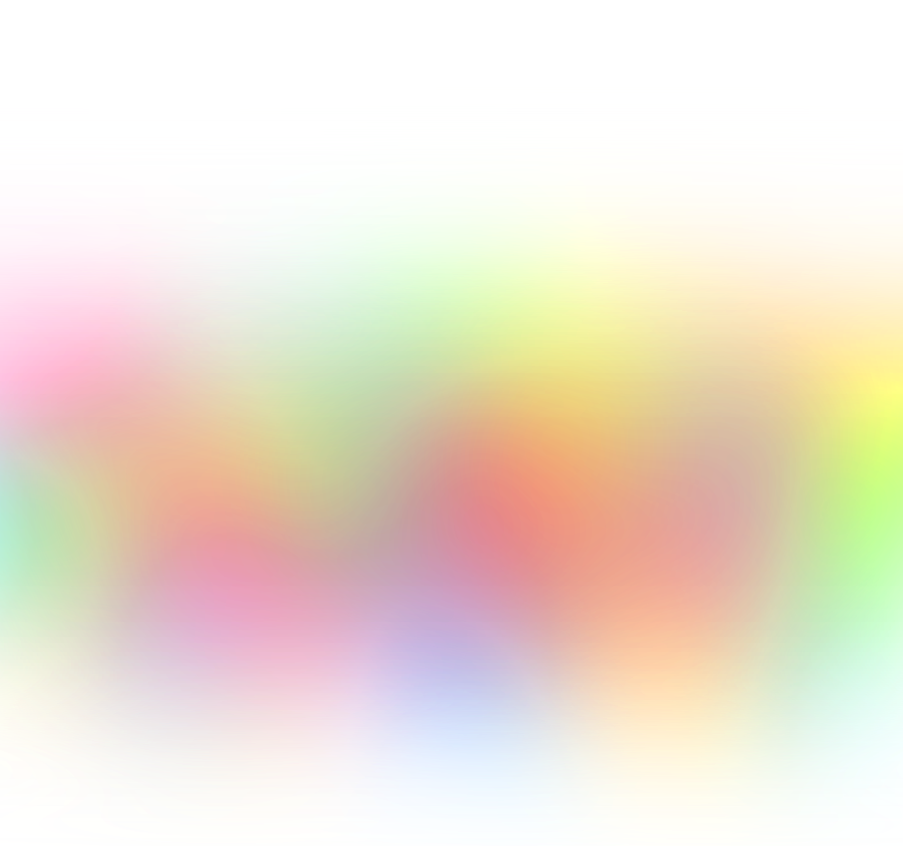

Actuellement étudiant en 3ème année de BUT MMI (Métiers du Multimédia et de l'Internet) à Saint-Lô, je suis à la recherche d'un stage dans
le domaine du développement informatique lié au multimédia. Vous trouverez sur ce portfolio certains de mes projets
réalisés au cours de mes études.
Paul Lebée
Bienvenue sur mon Portfolio

Compétences
Développement web
Développement web front avec JavaScript, utilisation de la bibliothèque React
Utilisation de CMS comme Wordpress
Développement web back PHP en utilisant Symfony. Création et intégration de services
web et d’API en utilisant l’architecture REST.
Conteneurisation d’applications web avec Docker
Dispositifs interactifs
Développement de logiciel et traitement de fichiers MIDI avec Max/MSP
Développement d’expérience en réalité virtuelle avec Unity
Création de scènes 3D avec la bibliothèque JavaScript Three.js
Utilisation de l’API Google de détection de mouvements MediaPipe
UX Design
Création de maquettes avec Adobe XD et Figma
Connaissance des normes d’accessibilité W3C
Rédaction web et SEO
Création artistique
Création d’affiches, de flyers et de logo avec Illustrator et Photoshop
Conception de charte graphique avec déclinaisons en utilisant Illustrator
Dessin, création de personnages sur Illustrator et papier
Composition musicale et mixage audio avec FL Studio
Montage vidéo avec Premiere Pro
Animation et motion design avec After Effect
MONO-PIANO
DISPOSITIF INTERACTIF
DÉVELOPPEMENT WEB
UX DESIGN
PROJET UNITY
DISPOSITIF INTERACTIF
GRAPHISME
QUOTIDIEN NUMÉRIQUE
DÉVELOPPEMENT WEB
CRÉATION ARTISTIQUE
DÉVELOPPEMENT WEB
UX DESIGN
FLYERS
DESIGN
1/6
Mono-Piano
Dans le cadre de mon BUT MMI, j'ai dû effectuer un stage en
entreprise afin de mettre en œuvre les compétences acquises au cours de ma formation dans un
contexte professionnel. J'ai donc réalisé un stage de 14 semaines au sein de PUCE MUSE, une
association d'art numérique spécialisée dans la musique visuelle. L'objectif de
ce stage était le développement d'un logiciel de Musique Assistée par Ordinateur (MAO)
appelé Mono-Piano.
Affichage des notes
Le Mono-Piano s'inspire d'une ancienne application de PUCE MUSE appelée
le Méta-Piano. À l'origine, le Méta-Piano est une création du musicien et chercheur Jean Haury. L'objectif
de cette application est de permettre à n'importe qui d'interpréter n'importe quelle partition au piano, quel
que soit son niveau.
Chaque fois que l'utilisateur appuie et relâche les boutons du support de son choix
(clavier, manette, ...), la note ou l'accord à venir dans la partition est joué. Cela laisse donc à
l'utilisateur une notion d'interprétation, puisqu'il choisit la manière dont il joue (vitesse, intensité).
Pour le développement du Mono-Piano, j'ai utilisé le code de l'ancienne application Méta-Piano comme
base de travail. En plus de m'assurer que les notes étaient correctement jouées lorsque l'utilisateur
appuie sur les touches, j'ai également dû m'occuper de l'affichage.
Cet affichage sous la forme d'un
piano roll, permet de visualiser les notes à venir dans la partition. J'ai veillé à ce que l'affichage
soit correct par rapport à la partition et qu'il réagisse de manière appropriée aux actions de l'utilisateur.
De plus, j'ai ajouté des paramètres de personnalisation tels que la couleur, le nombre de notes affichées
et la largeur des notes.
Une nouveauté par rapport à l'ancienne version de l'application était l'ajout d'un
parseur MIDI. Les fichiers MIDI sont des fichiers utilisés pour partager des partitions musicales. L'objectif de ce
parseur est de permettre à l'utilisateur d'importer n'importe quel fichier MIDI pour pouvoir le jouer
grâce au Mono-Piano. Étant donné que le Mono-Piano utilise un format spécifique pour lire les partitions,
il a donc fallu que je développe un parseur transformant les fichiers MIDI en ce format.
Résultat du parseur MIDI, lisible par le Mono-Piano
La dernière étape était d'intégrer le logiciel dans un template d'interface Mono puisque toutes les
applications Mono de PUCE MUSE ont une interface similaires. En raison de la durée limitée de mon stage je n'ai pas mis en
place moi même l'interface mais j'ai veillé à ce que le code soit le plus clair est commenté possible pour pour permettre une
intégration rapide.
Interface de Mono-Map, un logiciel du groupe Mono
STEREO
Au cours de notre formation nous sommes amenés à mettre en pratique nos connaissances dans des projets
multidisiplinaires.
Un de ces projets était la réalisation par groupe de trois personnes d'un site web de vente de musique en ligne.
Une base de données comprenant des utilisateurs, des albums, des titres et des playlists nous était fournie. Un cahier des
charges détaillé spécifiait les attentes pour les différentes pages et fonctionnalités. C'était ensuite à nous de définir
l'aspect graphique du site ainsi que l'arborescence. Pour ce projet, j'ai été en charge en partie du wireframe, de
l'intégration de la base de données et de la stylisation grâce au framework CSS Tailwind.
Page d'accueil du prototype du sitePage d'historique du siteWireframe du site
Quotidien Numérique
Un autre projet réalisé lors de ma première année de BUT MMI était la conception,
en groupe de 4 personnes, d'un site dédié à l'innovation. Ce site devait comporter un motion design
présentant l'une de ces innovations. Nous avons choisi de présenter Urban Canopee, des mobiliers urbains
végétaux écologiques. J'ai été chargé de concevoir le design du personnage principal, des Urban Canopee
et d'un camion. J'ai également animé une partie du motion design à l'aide d'After Effects.
Visuel principal du siteMotion design
Projet Unity
L'île du projet
Réalisé lors de ma deuxième année de BUT MMI, le but de ce projet était de
créer une expérience en réalité virtuelle sur une île grâce au moteur de jeu Unity. Pour cette
expérience, nous devions créer un scénario simple. L'objectif de mon expérience était
d'empêcher la destruction de l'île par une créature géante en trouvant son enfant caché quelque
part sur l'île. Cette sorte de chasse au trésor visait à encourager l'exploration.
Afin de guider
l'utilisateur, des Personnages Non Joueurs (PNJ) étaient positionnés à différents endroits de
l'île. Chaque PNJ indiquait l'emplacement du prochain PNJ, guidant ainsi l'utilisateur à
travers toute l'île. Le dernier PNJ donnait un indice sur l'emplacement de l'enfant.
Ville principale
Cette île était constituée d'assets libres de droits disposés de manière
à créer un environnement cohérent et varié. L'expérience démarre dans une ville avec un château.
L'utilisateur traverse ensuite une forêt, une petite île isolée, un désert, des montagnes,
et enfin un volcan. Les PNJ servant de guide étaient présents dans chacun de ces environnements.
En s'approchant, il était possible d'interagir avec eux pour afficher un dialogue. J'ai créé
moi-même le modèle d'un de ces PNJ avec le logiciel de modélisation 3D Blender.
N'ayant pas de casque pour véritablement expérimenter la réalité virtuelle,
j'ai utilisé mon téléphone pour contrôler la caméra en fonction des mouvements. Une partie de
l'écran permettait d'avancer.
Vue de la forêt
Vue depuis l'îlePersonnage dans Blender
TOUBO
Réalisé lors de ma deuxième année de BUT MMI, l'objectif de ce projet était
de réaliser par groupe de 3 un site de prévisions et statistiques météo.
Ce site responsive devait récupérer des informations météorologiques
en temps réel tout en proposant des statistiques. Nous avons d'abord utilisé
HTML/CSS pour créer la base du site et gérer l'affichage. Ensuite, nous avons récupéré les
informations sur une ville au choix via des requêtes sur l'API de Météo France. Pour réaliser
le tableau de bord des statistiques quotidiennes, nous avons utilisé Chart.js.
Je me suis
principalement occupé de la réalisation et de l'intégration d'un tableau de bord Google Looker
Studio qui permettait d'obtenir des statistiques sur une période au choix.
Page d'accueil du siteDashboard du siteWireframe du site
Flyers
Présentation de Saint-LôPrésentation du BUT MMI
Un autre projet réalisé lors de mon BUT MMI était la réalisation de flyers de présentation de l'IUT, de la formation ainsi que de la ville de Saint-Lô.
Ces flyers en anglais ayant pour but d'attirer des élèves étrangers pour un échange universitaire.